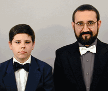

Anders Marshall, Steve Bryant
soprano, countertenor
|
Stabat Mater settings by Pergolesi and Vivaldi in a program of Italian Baroque music devoted to Mary, accompanied by baroque strings and organ.
Pergolesi and Vivaldi employ vivid text painting of these somber texts, both of which depict Mary’s suffering at the foot of the cross. These performances offer in one hearing two exceptional settings of Stabat Mater by nearly contemporary masters, along with a rarely performed Scarlatti gem. Anders Marshall is an exceptionally fine boy soprano near the peak of his powers. He frequently solos with the Seattle Boy Choir and appears in the fall of 1999 as one of the three spirits in the Seattle Opera performance of Mozart’s The Magic Flute. Steve Bryant is a specialist in the performance of music composed for castrati. He also leads the vocal quartet Three Men & A Soprano and has appeared as a guest soloist with Choral Arts Northwest and the Pacific Northwest Chamber Chorus. The small string ensemble, consistent with forces thought to have first performed Pergolesi’s masterpiece, includes musicians who perform with the Seattle Baroque Orchestra (Kim Zabelle and Olga Gussow, violins; Stephen Creswell, viola; and Claire Garabedian, violoncello). Jane Harty, who directs the ArtsWest Concert Series, will play on a small organ modeled after instruments of the time. These performances are made possible by a grant from the Seattle Arts Commission and by individual donations to the Early Music Guild. The second concert is jointly presented by the First Lutheran Church of West Seattle.
|
|
Click here for:
|
Graphics & Photography © 1999, Demian
Contents © 1999, Sweet Corn Productions
Return to Sweet Corn Productions
|
Sweet Corn Productions Box 9685, Seattle, WA 98109-0685 206-935-1206 demian@buddybuddy.com www.buddybuddy.com/sweet.html |